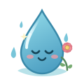

TODAY’S PROGRESS
0 / 8 glasses
One glass = 250 ml · Your progress saves on this device

HydralitHYDRATION CLUB · EST. TODAY
Catch a wave of good habits, one sip at a time.
TODAY’S PROGRESS
One glass = 250 ml · Your progress saves on this device
HYDRATION TRENDS
YOUR HYDRATION HISTORY